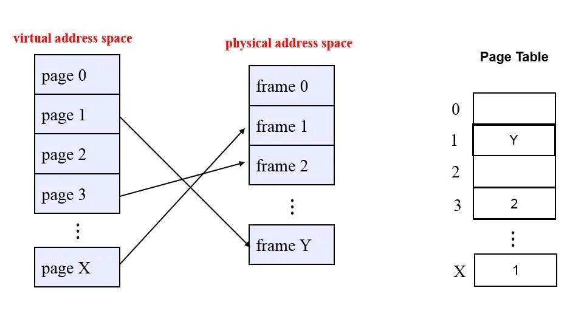
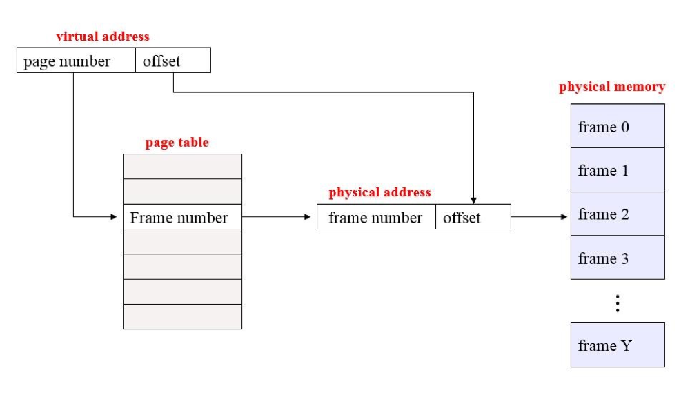

参考文章
内存是什么 — RAM Definition
Memory,as it’s used with regard to computer, most commonly refers to semicondutor devices whose contents can be accessed(i.e., read and written to) at extremely high speeds but which are retained only temporarily(i.e.,which in use or,at most,while the power supply remains on).
内存，因为它被用于计算机，最常指的是半导体的设备，其内容可以用极高速度访问(即读取和写入)，但只能暂时保留。
运行内存又可划分为虚拟内存和物理内存
Virtual memory Definition (虚拟内存)
Virtual memory is the use of space on a hard disk (HDD) is simulate additional main memory
译：虚拟内存是使用硬盘 (HDD) 上的空间来模拟额外的主内存
虚拟内存的意义
虚拟内存为每个进程提供了一个一致的、私有的地址空间，它让每个进程产生了一种自己在独享主存的错觉（每个进程拥有一片连续完整的内存空间）。这样会更加有效地管理内存并减少出错。
虚拟内存的重要意义是它定义了一个连续的虚拟地址空间，并且把内存扩展到硬盘空间
虚拟内存 使得应用程序认为它拥有连续的可用的内存（一个连续完整的地址空间），而实际上，它通常是被分隔成多个物理内存碎片，还有部分暂时存储在外部磁盘存储器上，在需要时进行数据交换。与没有使用虚拟内存技术的系统相比，使用这种技术的系统使得大型程序的编写变得更容易，对真正的物理内存（例如 RAM）的使用也更有效率。目前，大多数操作系统都使用了虚拟内存，如 Windows 家族的“虚拟内存”；Linux 的“交换空间”等。From:https://zh.wikipedia.org/wiki/虚拟内存 (opens new window)
主内存—物理内存
通俗易懂就是你现在电脑或者手机配置，在系统属性上写着RAM 8G就是你的物理内存的大小
Other Types of Memory (其他内存的模型)
The most basic of them is read-only memory(ROM),whose contents are written in at the factory and thereafter cannot be erased or rewritten.
局部性原理
局部性原理既适用于程序结构，也适用于数据结构
局部性原理表现在以下两个方面：
时间局部性 ：如果程序中的某条指令一旦执行，不久以后该指令可能再次执行；如果某数据被访问过，不久以后该数据可能再次被访问。产生时间局部性的典型原因，是由于在程序中存在着大量的循环操作。
空间局部性 ：一旦程序访问了某个存储单元，在不久之后，其附近的存储单元也将被访问，即程序在一段时间内所访问的地址，可能集中在一定的范围之内，这是因为指令通常是顺序存放、顺序执行的，数据也一般是以向量、数组、表等形式簇聚存储的。
时间局部性是通过将近来使用的指令和数据保存到高速缓存存储器中，并使用高速缓存的层次结构实现。
空间局部性通常是使用较大的高速缓存，并将预取机制集成到高速缓存控制逻辑中实现。虚拟内存技术实际上就是建立了 “内存一外存”的两级存储器的结构，利用局部性原理实现髙速缓存
基于局部性原理，在程序装入时，可以将程序的一部分装入内存，而将其他部分留在外存，就可以启动程序执行。由于外存往往比内存大很多，所以我们运行的软件的内存大小实际上是可以比计算机系统实际的内存大小大的。在程序执行过程中，当所访问的信息不在内存时，由操作系统将所需要的部分调入内存，然后继续执行程序。另一方面，操作系统将内存中暂时不使用的内容换到外存上，从而腾出空间存放将要调入内存的信息。这样，计算机好像为用户提供了一个比实际内存大的多的存储器——虚拟存储器。 实际上，我觉得虚拟内存同样是一种时间换空间的策略，你用 CPU 的计算时间，页的调入调出花费的时间，换来了一个虚拟的更大的空间来支持程序的运行。不得不感叹，程序世界几乎不是时间换空间就是空间换时间。
内存管理的基础
CPU知识扩展
CPU只能访问其寄存器（Register）和内存（Memory）， 无法直接访问硬盘（Disk）。 存储在硬盘上的数据必须首先传输到内存中才能被CPU访问。从访问速度来看，对寄存器的访问非常快，通常为1纳秒； 对内存的访问相对较慢，通常为100纳秒（使用缓存加速的情况下；而对硬盘驱动器的访问速度最慢，通常为10毫秒。
Linux主要的内存管理技术
Base and limit registers（基址寄存器和界限寄存器）
Virtual memory（虚拟内存）
Swapping（交换）
Segmentation（分段）
Paging（分页)
Base and limit registers（基址寄存器和界限寄存器）
必须限制进程，以便它们只能访问属于该特定进程的内存位置。
每个进程都有一个基址寄存器和限制寄存器：
基址寄存器保存最小的有效存储器地址
限制寄存器指定范围的大小
Paging（分页)
有时可用内存被分成许多小块，其中没有一块足够大以满足下一个内存需求，然而他们的总和却可以。这个问题被称为碎片（Fragmentation），许多内存分配策略都会受其影响。
分页将物理内存划分为多个大小相等的块，称为帧（Frame）。
并将进程的逻辑内存空间也划分为大小相等的块，称为页面（Page）。
任何进程中的任何页面都可以放入任何可用的帧中。
页表（Page Table）用于查找此刻存储特定页面的帧。

使用分页时，虚拟内存地址是一对：<页码，偏移量>
页码（Page Number）：用作页表的索引，以查找此页面的条目
偏移量（Offset）：与基址相结合，以定义物理内存地址

1 | 举一个分页地址转换的例子： |
Linux十万个为什么
虚拟内存为什么会设计出来
在早期的计算机中，程序是直接运行在物理内存上的，那个时候的计算机和程序内存都很小。程序运行时会把其全部加载到内存，只要程序所需的内存不超过计算机剩余内存就不会出现问题。
但由于程序是可以直接访问物理内存的，这也带来了内存数据的不安全性，轻则程序挂掉，重则操作系统崩溃。
所以，我们希望程序间的内存数据是安全的互不影响的。同时计算机程序直接运行在物理内存上也导致了内存使用率较低，程序运行内存地址不确定，不同的运行顺序甚至会出错。此时在程序的执行过程中，已经存在着大量在物理内存和硬盘之间的数据交换过程。
基于以上问题，那我们可以是不是考虑在物理内存之上增加一个中间层，让程序通过虚拟地址去间接的访问物理内存呢。通过虚拟内存，每个进程好像都可以独占内存一样，每个进程看到的内存都是一致的，这称为虚拟地址空间。
（这种思想在现在也用的很广泛，例如很多优秀的中间层：Nginx、Redis 等等）
这样只要系统处理好虚拟地址到物理地址的映射关系，就可以保证不同的程序访问不同的内存区域，就可以达到物理内存地址隔离的效果，进而保证数据的安全性
内存映射是什么
关于内存映射，首先要明白什么是虚拟内存和物理内存 。
虚拟内存与物理内存的映射关系是通过 页表。
页表通过内存页进行映射
页表是什么
但 页表 并不是按字节来进行映射的，而是按照 内存页 为单位进行映射，一般一个 内存页 的大小为 4KB（为什么要加一般呢，这是因为除了4KB，还有其他大小的内存页，如2MB，4MB，1GB等），页表 的每一个 页表项 都保存着物理内存页的地址。
所以，4GB 的虚拟内存空间需要 1MB 大小的页表来关联（因为 4GB / 4KB = 1MB）。也就是说，0 ~ 4095 的虚拟内存地址都是使用 页表 的第一个 页表项 来映射的，而 4096 ~ 8191 的虚拟内存地址使用 页表 的第二个 页表项 来映射的，以此类推..
cr3是什么
cr3 是 CPU 中的一个寄存器，用于保存 页表 的物理内存地址，通过这个寄存器就能找到进程的 页表 了